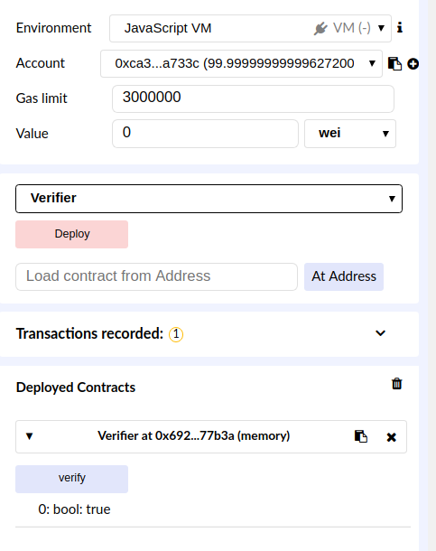

This page demonstrates how to sign EIP712 typed data using MetaMask and verify it in Solidity. Feel free to learn from it and adapt it for your dApp and smart contracts.
You need a version of MetaMask that supports eth_signTypedData_v2 to use this demo. Prebuilt extensions can be downloaded from metamaskbot here.
Next, copy and paste this into Remix, deploy it in the Javascript VM environment, and run the verify function.
The signature generated by MetaMask, as well as your wallet address, has been inserted into the Solidity code above. The code hashes the data you just signed, runs ecrecover with yoour signature, and compares it with your wallet address.
If Remix displays
0: bool: truethat's great! Your wallet address was successfully authenticated against the signature.
An example:
